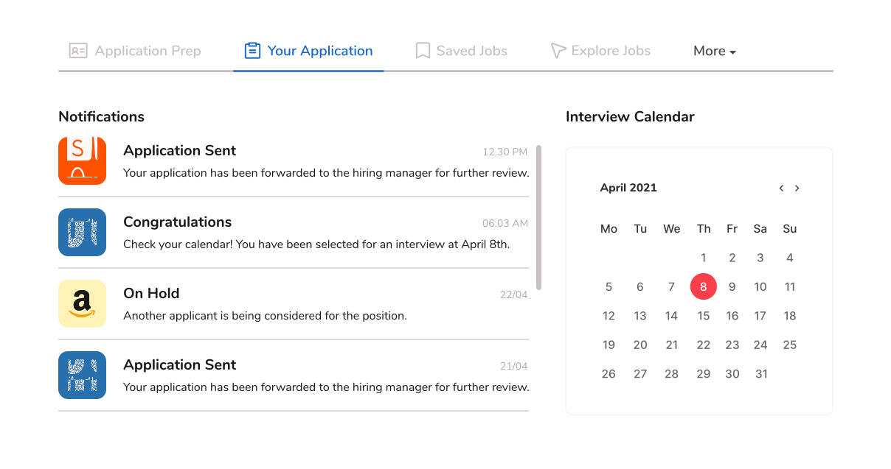
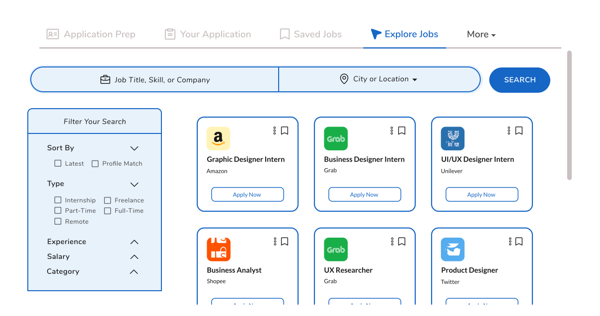
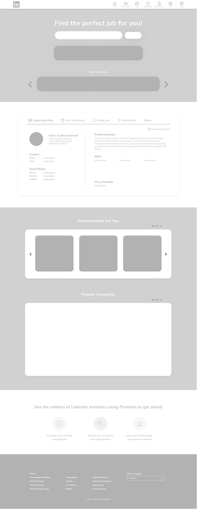
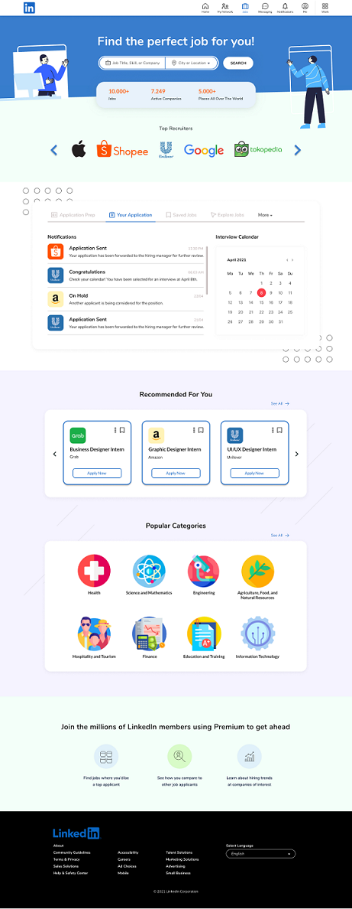

LinkedIn Jobs Redesign (written in Bahasa)
Overview
LinkedIn merupakan salah satu jejaring sosial yang keberadaannya sudah tidak diragukan lagi bagi para profesional. Sebagian besar perekrut menggunakan jejaring sosial dalam pekerjaan mereka saat ini dan LinkedIn adalah jejaring sosial yang paling sering mereka gunakan, menurut Jobvite. Berbagai fitur LinkedIn tersedia dan dapat membantu penggunanya dalam meningkatkan karir mereka, salah satunya adalah dengan menyediakan laman Jobs yang dapat membantu penggunanya menemukan pekerjaan atau magang yang tepat.
Beberapa waktu terakhir ini, saya sering mengunjungi LinkedIn Jobs untuk mencari kesempatan magang. Alasan utama saya memilih untuk mencari magang melalui LinkedIn ialah karena reputasinya yang sudah melekat sangat baik. Selain itu, jika saya mendapatkan informasi mengenai lowongan, saya juga dapat dengan mudah mengakses profil perusahaannya tanpa harus mencari informasi mengenai perusahaan tersebut diluar LinkedIn.
User Research and Pain Points
Selama penelusuran dan pengalaman saya menggunakan LinkedIn untuk mencari lowongan magang, saya menemukan beberapa hal yang seharusnya dapat ditingkatkan guna memaksimalkan tampilan dan experience dari sisi pengguna, yaitu:
- Pengguna tidak mendapatkan notifikasi lebih lanjut mengenai status lamaran yang sudah diajukan
- Filter pencarian pekerjaan terlalu kompleks dan tidak fleksibel
- Pemberitahuan mengenai lowongan yang tersedia dan yang relate dengan profil pengguna masuk begitu banyak ke dalam tab Notifikasi sehingga membuat pengguna terganggu akan spam
Ketiga poin diatas juga mewakili sebagian besar hasil user research yang saya lakukan sebelum memulai project ini. Sebelum membuat ketiga poin diatas, saya memulai dengan membuat survei kecil dengan memasukkan beberapa pertanyaan seperti:
- Seberapa sering Anda menggunakan LinkedIn untuk mencari magang?
- Apakah ada kesulitan atau ketidaknyamanan saat menggunakan LinkedIn untuk mencari magang?
- Apa yang Anda sukai tentang menggunakan LinkedIn untuk mencari lowongan magang?
- Boleh diceritakan sedikit tentang proses pencarian magang yang biasanya Anda lakukan di LinkedIn?
- Apakah Anda mengetahui cara mengkustomisasi atau melakukan filter saat melakukan pencarian magang di LinkedIn? Jika tahu, bagaimana caranya?
- Bagaimana tanggapan anda tentang filter pencarian magang di LinkedIn?
Saya mencoba untuk memahami dan membuat list mengenai masalah apa saja yang mereka hadapi dan hal-hal apa saja yang perlu dipertahankan.
Persona
Lebih lanjut mengenai hasil survei yang saya lakukan, dapat dilihat sebagai berikut:

LinkedIn dinilai tidak maksimal dalam menangani fitur Jobsnya. Beberapa pengguna yang sering mencari lowongan magang mengeluhkan beberapa hal yang mirip seperti notifikasi status lamaran yang mereka ajukan dan filter pencarian yang begitu kompleks.
Challenge
Melihat pain points dan user persona yang sudah saya paparkan sebelumnya, tujuan saya dalam project ini adalah untuk kembali meminimalisir hal-hal yang berlebihan dan terasa kompleks bagi pengguna dalam proses pengajuan lamaran magang. Premis sederhananya: klik button, dapatkan pekerjaan. Sasaran lebih lanjut saya adalah untuk:
- Membuat LinkedIn agar lebih mudah untuk digunakan oleh semua orang
- Memberikan pelamar pekerjaan lebih banyak kendali atas waktu dan pengajuan lamaran mereka
- Mempertahankan engagement LinkedIn dalam menotifikasi pengguna namun memaksimalkannya dalam sisi lamaran yang telah diajukan pengguna
- Membuat platform pencari pekerjaan ini berbeda dengan adanya inovasi baru yang dapat membantu pengguna
Design Solutions
Terkait pain points yang telah ditentukan pula, disini saya akan mencoba menyelesaikan masalah-masalah tersebut.  Untuk mengatasi pain point pertama, pengguna tak perlu risau lagi dan bertanya-tanya mengenai status lamaran mereka. Tab notifikasi khusus pada laman Jobs ini dapat membantu mereka untuk melihat status lamaran tersebut. Selain itu, terdapat kalender pengingat untuk mengatur jadwal lamaran atau jadwal wawancara pengguna jika pengguna ternotifikasi. Hal ini tentu saja dapat membuat pengguna menyimpan lebih banyak waktu karena mereka tidak harus membuka aplikasi lain untuk tetap teratur, untuk melihat status lamaran maupun untuk mencatat informasi mengenai jadwal wawancara mereka. Semuanya kini ada dalam laman jobs LinkedIn. Saya terilhami untuk merancang secara inovatif dengan menambahkan fitur yang terorganisasi tersebut untuk menciptakan alur pengguna yang lancar di LinkedIn. Fitur diatas juga mendukung solusi atas pain point yang ketiga. Terpisahnya tab notifikasi akun sosial LinkedIn dan laman jobs mereka dapat meminimalisir terjadinya spam karena kini notifikasi mengenai lowongan dan laman jobs sudah berdiri sendiri.
 Untuk mengatasi pain point ketiga, dalam solusi yang saya tawarkan, pengguna dapat memilih secara multiple kriteria magang yang mereka inginkan. Ada banyak kriteria yang dapat dipilih dan hal ini membuat pengguna dapat mencari keinginannya secara lebih fleksibel. Nantinya, lowongan-lowongan yang muncul adalah lowongan yang memenuhi kriteria-kriteria tersebut.
Wireframe & High-fidelity Design
| Wireframe | High-fidelity Design |
|---|---|
|  |  |
Conclusion
Proses redesign ini memakan waktu yang banyak di sela-sela padatnya jadwal perkuliahan saya. Namun, semua ini cukup membuat saya puas karena sedikit demi sedikit bisa berproses untuk mengejar apa yang saya inginkan dimasa depan nanti. Walaupun UI/UX Design Challenge ini adalah tuntutan dari Kampus Indonesia dalam tahap seleksi Internship Batch 5-nya, saya sangat menikmati proses yang saya lewati. Apa yang saya tulis merupakan hasil pembelajaran saya selama ini, mohon maaf sekiranya jika ada yang kurang. Saya sangat senang menerima koreksian, saran, dan pendapat kakak-kakak Kampus Indonesia mengenai pekerjaan saya ini. Terima kasih banyak!
Archive
- Wireframe (pdf) - click here to access
- High-fidelity Design (pdf) - click here to access
- Figma (prototype) - click here to access